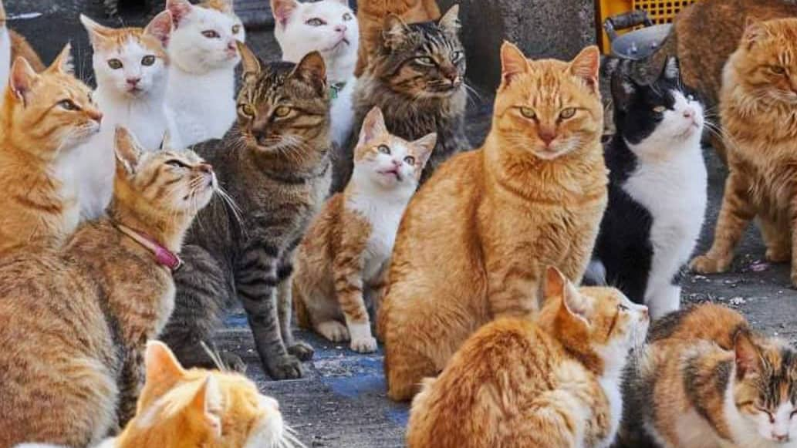
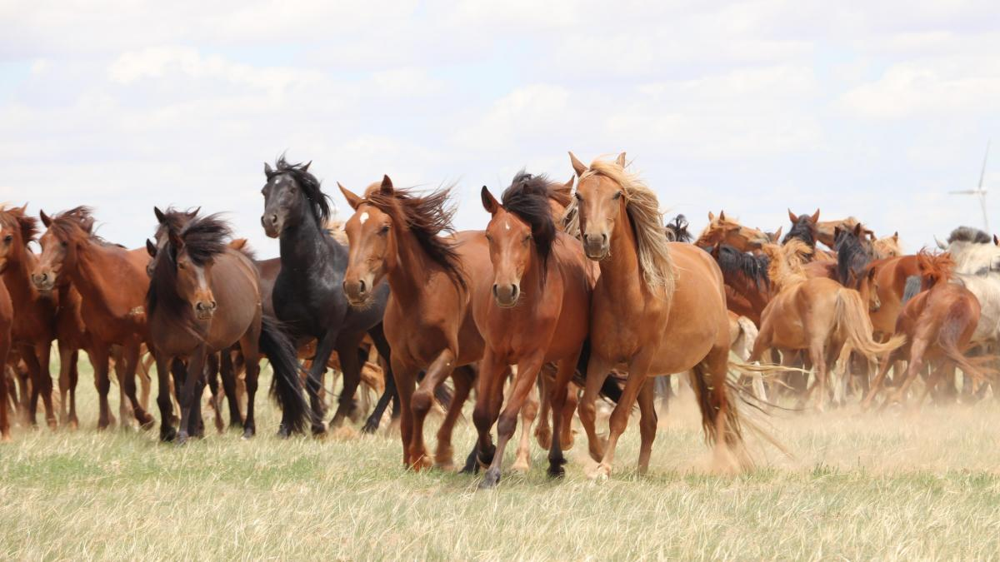
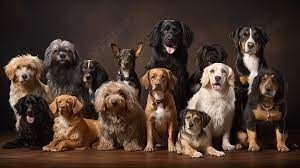

Definición de algunos animales

Gatos
Mamífero felino de tamaño generalmente pequeño, cuerpo flexible, cabeza redonda, patas cortas, cola larga, pelo espeso y suave, largos bigotes y uñas retráctiles; es carnívoro y tiene gran agilidad, buen olfato, buen oído y excelente visión nocturna; existen muchas especies diferentes.

Caballos
Los caballos son una especie de mamífero cuadrúpedo herbívoro de la familia de los equinos, que comprende numerosas razas diferentes (alrededor de 400), dependiendo de su proveniencia geográfica, y que se encuentra entre los primeros animales domesticados por el ser humano.

Perros
Mamífero carnívoro doméstico de la familia de los cánidos que se caracteriza por tener los sentidos del olfato y el oído muy finos, por su inteligencia y por su fidelidad al ser humano, que lo ha domesticado desde tiempos prehistóricos; hay muchísimas razas, de características muy diversas.